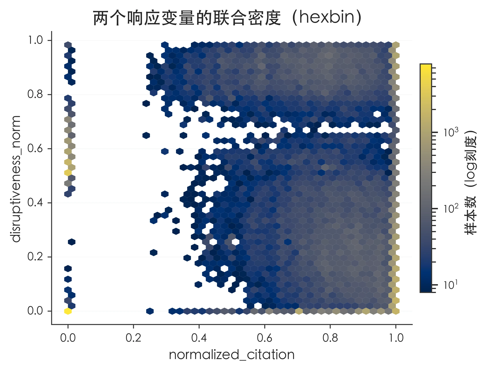

Finding 1
高引用与高颠覆性不是同一类学术影响。
引用影响与颠覆性影响几乎不呈单调同向关系。高引用论文在引用分布上整体右移，但在颠覆性分布上并未同步右移。
本页面展示一组围绕论文影响力形成机制的可视化结果。分析同时考察标准化引用、标准化颠覆性、参考文献规模、期刊影响因子、作者与机构声誉、团队结构、主题文本和同行评议过程变量。核心结果显示，高引用论文与高颠覆性论文并不服从同一套解释逻辑：前者更接近可见度、资源网络和声誉积累，后者更接近新颖组合、小团队和较低声誉位置中的探索性研究。

以下发现用于概括全组图表的主线，并在后续章节中由具体图表逐项支撑。
引用影响与颠覆性影响几乎不呈单调同向关系。高引用论文在引用分布上整体右移，但在颠覆性分布上并未同步右移。
期刊影响因子、参考文献规模、作者与机构 h 指数、团队规模等变量，与高引用比例呈现更一致的正向关系。
作者和机构声誉越高，高颠覆性论文比例整体越低；团队规模越大、团队平均学术年龄越高，高颠覆性比例也越低。
评审轮次、审稿意见长度、作者回复长度和情绪变量与长期影响之间存在条件性关系，单个过程变量难以直接解释高引用或高颠覆性。
图表按研究问题组织，而非按原始文档顺序排列。每一部分包含一张主图和若干支撑图。
可按主题筛选或检索图表标题、指标和说明。点击缩略图或“查看”可放大原图。
本页使用文档中的静态图表组织展示。若需要进一步发布为可复现的研究页面，需补充原始数据和正式图注。
页面包含 47 张图表，主题覆盖样本结构、引用与颠覆性指标、文献网络、主题文本、作者与机构声誉、团队结构和同行评议过程变量。